위험물산업기사 (2015-05-31 기출문제)
1과목: 일반화학
1. 다음 물질 중 수용액에서 약한 산성을 나타내며 염화제이철 수용액과 정색반응을 하는 것은?
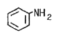
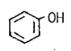
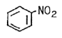
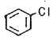
(정답률: 81%)

2. 알루미늄 이온(Al3+) 한 개에 대한 설명으로 틀린 것은?
- 질량수는 27 이다.
- 양성자수는 13 이다.
- 중성자수는 13 이다.
- 전자수는 10 이다.
(정답률: 72%)
3. C6H14 의 구조 이성질체는 몇 개가 존재하는가?
- 4
- 5
- 6
- 7
(정답률: 75%)
4. 밑줄친 원소의 산화수가 같은 것끼리 짝지워진 것은?
- SO3 와 BaO2
- BaO2 와 K2Cr2O7
- K2Cr2O7 과 SO3
- HNO3 와 NH3
(정답률: 83%)
5. CO2 44g 을 만들려면 C3H8 분자가 약 몇 개 완전 연소 해야하는가?
- 2.01 × 1023
- 2.01 × 1022
- 6.02 × 1022
- 6.02 × 1023
(정답률: 60%)
6. 농도 단위에서 “N" 의 의미를 가장 옳게 나타낸 것은?
- 용액 1L 속에 녹아있는 용질의 몰 수
- 용액 1L 속에 녹아있는 용질의 g 당량수
- 용액 1000g 속에 녹아있는 용질의 몰 수
- 용액 1000g 속에 녹아있는 용질의 g 당량수
(정답률: 79%)
7. CuSO4 용액에 0.5F 의 전기량을 흘렸을 때 약 몇 g 구리가 석출되겠는가? (단, 원자량은 Cu 64, S 32, O 16 이다.)
- 16
- 32
- 64
- 128
(정답률: 69%)
8. NaOH 수용액 100mL 를 중화하는데 2.5N 의 HCl 80mL 가 소요되었다. NaOH 용액의 농도(N)는?
- 1
- 2
- 3
- 4
(정답률: 65%)
9. 수소 분자 1mol 에 포함된 양성자수와 같은 것은?
- 1/4O2mol 중 양성자수
- NaCl 1mol 중 ion 의 총수
- 수소 원자 1/2mol 중의 원자수
- CO2 1mol 중의 원자수
(정답률: 69%)
10. 비극성 분자에 해당하는 것은?
- CO
- CO2
- NH3
- H2O
(정답률: 73%)
11. 공기의 평균분자량은 약 29 라고 한다. 이 평균 분자량을 계산하는데 관계된 원소는?
- 산소, 수소
- 탄소, 수소
- 산소, 질소
- 질소, 탄소
(정답률: 86%)
12. 어떤 물질이 산소 50Wt%, 황 50Wt% 로 구성되어 있다. 이 물질의 실험식을 옳게 나타낸 것은?
- SO
- SO2
- SO3
- SO4
(정답률: 83%)
13. 어떤 금속(M) 8g 을 연소시키니 11.2g 의 산화물이 얻어졌다. 이 금속의 원자량이 140 이라면 이 산화물의 화학식은?
- M2O3
- MO
- MO2
- M2O7
(정답률: 83%)
14. 이소프로필알코올에 해당하는 것은?
- C6H5OH
- CH3CHO
- CH3COOH
- (CH3)2CHOH
(정답률: 70%)
15. 은거울 반응을 하는 화합물은?
- CH3COCH3
- CH3OCH3
- HCHO
- CH3CH2OH
(정답률: 63%)
16. 방사능 붕괴의 형태 중
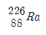
이 α 붕괴할 떄 생기는 원소는?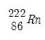
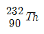
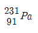
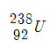
(정답률: 90%)
17. 60℃에서 KNO3 의 포화용액 100g 을 10℃로 냉각시키면 몇 g 의 KNO3 가 석출하는가? (단, 용해도는 60℃에서 100g KNO3/100g H2O, 10℃ 에서 20g KNO3/100g H2O 이다.)
- 4
- 40
- 80
- 120
(정답률: 67%)
18. 이온평형계에서 평형에 참여하는 이온과 같은 종류의 이온을 외부에서 넣어주면 그 이온의 농도를 감소시키는 방향으로 평형이 이동한다는 이론과 관계있는 것은?
- 공통이온효과
- 가수분해효과
- 물의 자체 이온화 현상
- 이온용액의 총괄성
(정답률: 70%)
19. 다음의 반응식에서 평형을 오른쪽으로 이동 시키기 위한 조건은?
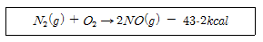
- 압력을 높인다.
- 온도를 높인다.
- 압력을 낮춘다.
- 온도를 낮춘다.
(정답률: 70%)
20. sp3 혼성오비탈을 가지고 있는 것은?
- BF3
- BeCl2
- C2H4
- CH4
(정답률: 65%)
2과목: 화재예방과 소화방법
21. 소화설비 설치 시 동식물유류 400000L 에 대한 소요단위는 몇 단위인가?
- 2
- 4
- 20
- 40
(정답률: 70%)
22. 소화약제로서 물이 갖는 특성에 대한 설명으로 옳지 않은 것은?
- 유화효과(emulsification effect)도 기대할 수 있다.
- 증발잠열이 커서 기화 시 다량의 열을 제거한다.
- 기화팽창률이 커서 질식효과가 있다.
- 용융잠열이 커서 주수 시 냉각효과가 뛰어나다.
(정답률: 78%)
23. 다음 중 가연성 물질이 아닌 것은?
- C2H5OC2H5
- KClO4
- C2H4(OH)2
- P4
(정답률: 53%)
24. 위험물안전관리법령상 마른모래(삽 1개 포함) 50L 의 능력단위는?
- 0.3
- 0.5
- 1.0
- 1.5
(정답률: 83%)
25. 위험물안전관리법령에 따른 이동식할로겐화물 소화설비 기준에 의하면 20℃에서 하나의 노즐이 하론 2402를 방사 할 경우 1분당 몇 kg의 소화약제를 방사할 수 있어야 하는가?
- 35
- 40
- 45
- 50
(정답률: 74%)
26. 위험물안전관리법령에 따르면 옥외소화전의 개폐밸브 및 소화접속구는 지반면으로부터 몇 m이하의 높이에 설치해야하는가?
- 1.5
- 2.5
- 3.5
- 4.5
(정답률: 84%)
27. 위험물안전관리법령상 물분무소화설비가 적응성이 있는 대상물은?
- 알칼리금속과산화물
- 전기설비
- 마그네슘
- 금속분
(정답률: 76%)
28. 소화약제 또는 그 구성성분으로 사용되지 않는 물질은?
- CF2ClBr
- CO(NH2)2
- NH4NO3
- K2CO3
(정답률: 54%)
29. 스프링클러 설비의 장점이 아닌 것은?
- 소화약제가 물이므로 소화약제의 비용이 절감된다.
- 초기 시공비가 적게 든다.
- 화재 시 사람의 조작 없이 작동이 가능하다.
- 초기화재의 진화에 효과적이다.
(정답률: 91%)
30. 수소화나트륨 저장 창고에 화재가 발생하였을 때 주수소화가 부적합한 이유로 옳은 것은?
- 발열반응을 일으키고 수소를 발생한다.
- 수화반응을 일으키고 수소를 발생한다.
- 중화반응을 일으키고 수소를 발생한다.
- 중합반응을 일으키고 수소를 발생한다.
(정답률: 76%)
31. 이산화탄소 소화기에 관한 설명으로 옳지 않은 것은?
- 소화작용은 질식효과와 냉각효과에 의한다.
- A급, B급 및 C급 화재 중 A급 화재에 가장 적응성이 있다.
- 소화약제 자체의 유독성은 적으나, 공기 중 산소 농도를 저하시켜 질식의 위험이 있다.
- 소화약제의 동결, 부패, 변질 우려가 적다.
(정답률: 85%)
32. 위험물안전관리법령상 제6류 위험물에 적응성이 있는 소화설비는?
- 옥내소화전설비
- 이산화탄소소화설비
- 할로겐화합물소화설비
- 탄산수소염류 분말소화설비
(정답률: 75%)
33. 위험물안전관리법령에서 정한 포소화설비의 기준에 따른 기동장치에 대한 설명으로 옳은 것은?
- 자동식의 기동장치만 설치하여야 한다.
- 수동식의 기동장치만 설치하여야 한다.
- 자동식의 기동장치와 수동식의 기동장치를 모두 설치하여야 한다.
- 자동식의 기동장치 또는 수동식의 기동장치를 설치하여야 한다.
(정답률: 75%)
34. 위험물안전관리법령상 가솔린의 화재 시 적응성이 없는 소화기는?
- 봉상강화액소화기
- 무상강화액소화기
- 이산화탄소소화기
- 포소화기
(정답률: 56%)
35. 가연물의 구비조건으로 옳지 않은 것은?
- 열전도율이 클 것
- 연소열량이 클 것
- 화학적 활성이 강할 것
- 활성화 에너지가 작을 것
(정답률: 80%)
36. 물을 소화약제로 사용하는 장점이 아닌 것은?
- 구하기 쉽다.
- 취급이 간편하다.
- 기화잠열이 크다.
- 피연소 물질에 대한 피해가 없다.
(정답률: 82%)
37. 위험물제조소에 옥내소화전을 각 층에 8개씩 설치하도록 할 때 수원의 최소 수량은 얼마인가?
- 13m3
- 20.8m3
- 39m3
- 62.4m3
(정답률: 89%)
38. 다음 중 화학적 에너지원이 아닌 것은?
- 연소열
- 분해열
- 마찰열
- 융해열
(정답률: 76%)
39. 다음 중 비열이 가장 큰 물질은?
- 물
- 구리
- 나무
- 철
(정답률: 84%)
40. 트리에틸알루미늄의 소화약제로서 다음 중 가장 적당한 것은?
- 마른모래, 팽창질석
- 물, 수성막포
- 할로겐화물, 단백포
- 이산화탄소, 강화액
(정답률: 87%)
3과목: 위험물의 성질과 취급
41. 위험물안전관리법령상 위험물을 수납한 운반용기의 외부에 표시하여야 할 사항이 아닌 것은?
- 위험등급
- 위험물의 수량
- 위험물의 품명
- 안전관리자의 이름
(정답률: 85%)
42. 피리딘에 대한 설명 중 틀린 것은?
- 물보다 가벼운 액체이다.
- 인화점은 30℃ 보다 낮다.
- 제1석유류이다.
- 지정수량이 200리터이다.
(정답률: 66%)
43. 위험물안전관리법령상 취급소에 해당되지 않는 것은?
- 주유취급소
- 옥내취급소
- 이송취급소
- 판매취급소
(정답률: 70%)
44. 위험물을 저장 또는 취급하는 탱크의 용량산정 방법에 관한 설명으로 옳은 것은?
- 탱크의 내용적에서 공간용적을 뺀 용적으로 한다.
- 탱크의 공간용적에서 내용적을 뺀 용적으로 한다.
- 탱크의 공간용적에 내용적을 더한 용적으로 한다.
- 탱크의 볼록하거나 오목한 부분을 뺀 내용적으로 한다.
(정답률: 89%)
45. KClO4에 관한 설명으로 옳지 못한 것은?
- 순수한 것은 황색의 사방정계결정이다.
- 비중은 약 2.52 이다.
- 녹는점은 약 610℃ 이다.
- 열분해하면 산소와 염화칼륨으로 분해된다.
(정답률: 58%)
46. 과산화수소의 성질에 관한 설명으로 옳지 않은 것은?
- 농도에 따라 위험물에 해당하는 않는 것도 있다.
- 분해 방지를 위해 보관 시 안정제를 가할 수 있다.
- 에테르에 녹지 않으며, 벤젠에 잘 녹는다.
- 산화제이지만 환원제로서 작용하는 경우도 있다.
(정답률: 75%)
47. 제조소에서 취급하는 위험물의 최대수량이 지정수량의 20배인 경우 보유공지의 너비는 얼마인가?
- 3m 이상
- 5m 이상
- 10m 이상
- 20m 이상
(정답률: 68%)
48. 물과 반응하여 가연성 또는 유독성 가스를 발생하지 않는 것은?
- 탄화칼슘
- 인화칼슘
- 과염소산칼륨
- 금속나트륨
(정답률: 60%)
49. 위험물제조소의 표지의 크기 규격으로 옳은 것은?
- 0.2m × 0.4m
- 0.3m × 0.3m
- 0.3m × 0.6m
- 0.6m × 0.2m
(정답률: 81%)
50. 아염소산나트륨의 성상에 관한 설명 중 틀린 것은?
- 자신은 불연성이다.
- 열분해하면 산소를 방출한다.
- 수용액 상태에서도 강력한 환원력을 가지고 있다.
- 조해성이 있다.
(정답률: 71%)
51. 위험물 운반시 유별을 달리하는 위험물의 혼재기준에서 다음 중 혼재가 가능한 위험물은? (단, 각각 지정수량 10배의 위험물로 가정한다.)
- 제1류와 제4류
- 제2류와 제3류
- 제3류와 제4류
- 제1류와 제5류
(정답률: 86%)
52. 과산화벤조일에 대한 설명으로 틀린 것은?
- 벤조일퍼옥사이드라고도 한다.
- 상온에서 고체이다.
- 산소를 포함하지 않는 환원성 물질이다.
- 희석제를 첨가하여 폭발성을 낮출 수 있다.
(정답률: 81%)
53. 제3류 위험물을 취급하는 제조소와 3백명 이상의 인원을 수용하는 영화상영관과의 안전거리는 몇 m 이상이어야 하는가?
- 10
- 20
- 30
- 50
(정답률: 80%)
54. 황화린의 성질에 해당되지 않는 것은?
- 공통적으로 유독한 연소 생성물이 발생한다.
- 종류에 따라 용해성질이 다를 수 있다.
- P4S3 의 녹는점은 100℃ 보다 높다.
- P2S5 는 물보다 가볍다.
(정답률: 53%)
55. 위험물안전관리법령상 제1석유류에 속하지 않는 것은?
- CH3COCH3
- C6H6
- CH3COC2H5
- CH3COOH
(정답률: 51%)
56. 위험물안전관리법령에 따라 특정옥외저장탱크를 원통형으로 설치하고자 한다. 지반면으로부터의 높이가 16m 일 때 이 탱크가 받는 풍하중은 1m2 당 얼마 이상으로 계산하여야 하는가? (단, 강풍을 받을 우려가 있는 장소에 설치하는 경우는 제외한다.)
- 0.7640kN
- 1.2348kN
- 1.6464kN
- 2.348kN
(정답률: 58%)
57. 다음 그림은 제5류 위험물 중 유기과산화물을 저장하는 옥내저장소의 저장창고를 개략적으로 보여 주고 있다. 창과 바닥으로부터 높이(a)와 하나의 창의 면적(b)은 각각 얼마로 하여야 하는가? (단, 이 저장창고의 바닥 면적은 150m2 이내이다.)
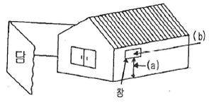
- (a) 2m 이상, (b) 0.6m2 이내
- (a) 3m 이상, (b) 0.4m2 이내
- (a) 2m 이상, (b) 0.4m2 이내
- (a) 3m 이상, (b) 0.6m2 이내
(정답률: 66%)
58. 옥외저장탱크를 강철판으로 제작할 경우 두께기준은 몇 mm 이상인가? (단, 특정옥외저장탱크 및 준특정옥외저장탱크는 제외한다.)
- 1.2
- 2.2
- 3.2
- 4.2
(정답률: 68%)
59. 다음 중 일반적으로 자연발화의 위험성이 가장 낮은 장소는?
- 온도 및 습도가 높은 장소
- 습도 및 온도가 낮은 장소
- 습도는 높고 온도는 낮은 장소
- 습도는 낮고 온도는 높은 장소
(정답률: 70%)
60. 옥내저장소에서 안전거리 기준이 적용되는 경우는?
- 지정수량 20배미만의 제4석유류를 저장하는 것
- 제2류 위험물 중 덩어리 상태의 유황을 저장하는 것
- 지정수량 20배미만의 동식물유류를 저장하는 것
- 제6류 위험물을 저장하는 것
(정답률: 64%)